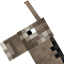

Второстепенные персонажи
Здесь представлены второстепенные персонажи СМП.
Белый кролик
Белый кролик
, или Красный кролик — брат
Жёлтого кролика
, по его же словам. Однако, они никогда не были замечены вместе.
Осёл

Осёл
— верный друг
Смотрителя маяка
.
 Белый кролик, или Красный кролик — брат
Белый кролик, или Красный кролик — брат